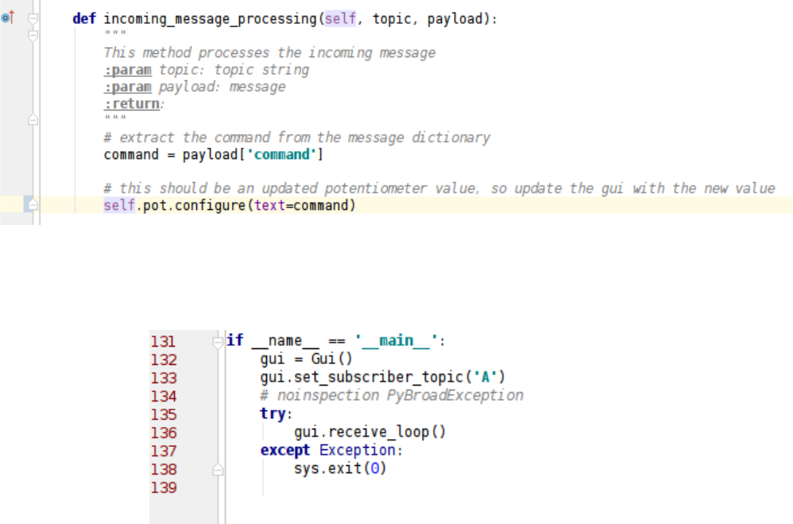
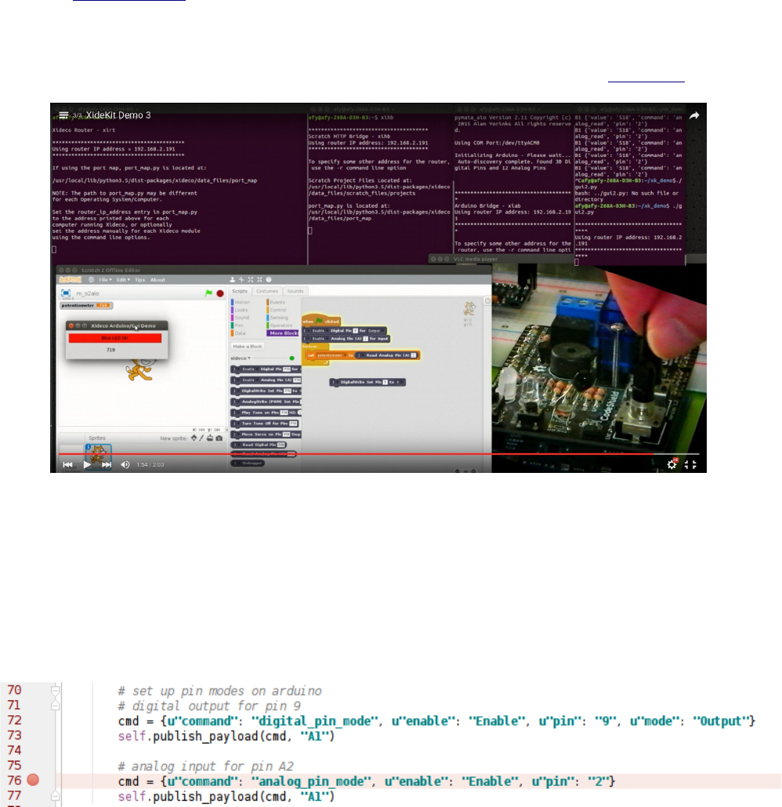
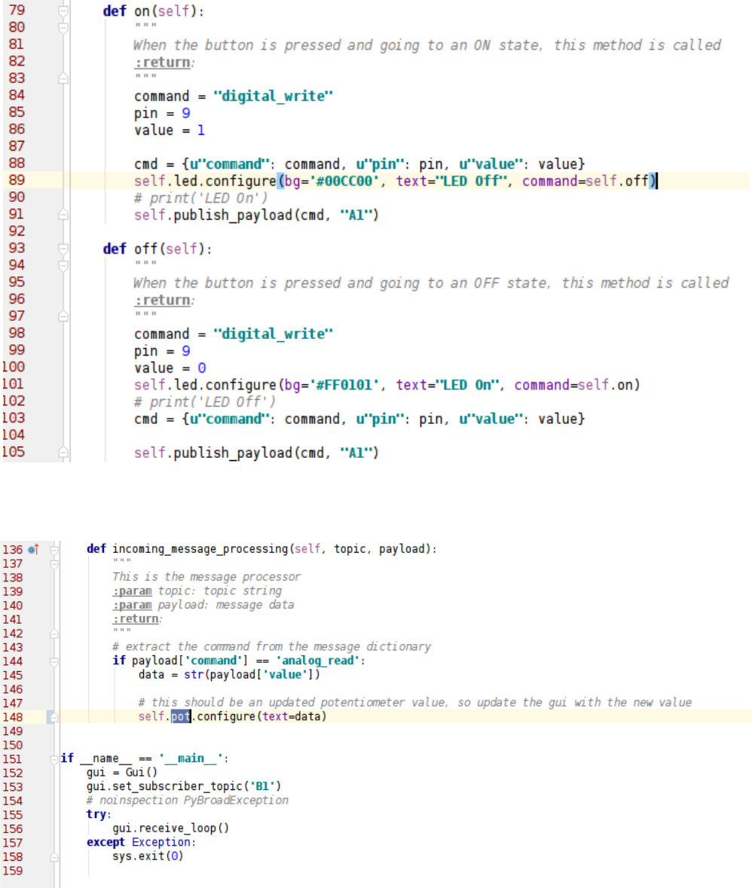

Building Network Distributed
Applications With The XideKit API
Ever since releasing Xideco, I am finding more and more that my physical computing projects are
gravitating towards using a network distributed application approach. Not only does this allow me to
reuse existing modules in the context of a new application, but in many instances I am also able to add
new or expanded functionality to a “live” application without effecting existing modules.
Both ZeroMQ and MessagePack are at the heart of these distributed network application designs. To
help simplify creating a network distributed application, I created XideKit , a base API class, that
encapsulates both ZeroMQ and MessagePack operations. This paper will discuss the details and use of
the XideKit API. Code examples and videos are provided to aid in the discussion.
Why ZeroMQ and MessagePack?
Wide Array of Support
Both ZeroMQ and MessagePack are available for a wide array of computing languages and operating
systems, allowing for maximum flexibility when designing and deploying applications. Even though
XideKit is Python3 centric, applications written in other languages may be added to a Xidekit network
application, as long as they adhere to the application's messaging protocol. The messaging protocol is
specified by the application designer and is not specified by XideKit.
Provides A Higher Level View of Both System and Data
By using a high level, transparent messaging protocol, seemingly disparate components can
communicate and coexist with each other in a consistent manner. For example, to change the state of a
GPIO output pin, a common protocol message is used, independent of board type. So if a new board
type is added, the board support module will translate this message to its specific GPIO control library,
without affecting the other board modules or the control driver module. This is exactly how Xideco is
able to use Scratch to simultaneously control Arduino, Raspberry Pi and BeagleBone Black boards. The
Scratch GUI communicates with all boards using a single common messaging protocol. When the
message is received by a specific board controller (for example, xiab for Arduino), the controller
translates the message into the board specific commands.
Components written in other computer languages can be plugged into the network as long as they
implement the control protocol. An example of this is Xideco's ability to use a node.js component to
monitor protocol messages being generated by Python modules.
Allows For Maximum Design Flexibility
Applications may reside on a single computer or across multiple computers without any modifications
1 Copyright (c) 2016 Alan Yorinks All Rights Reserved v1.0 8 April 2016
to the module's source code.
Components can be added to or removed from a “live” system without affecting other components
within the system. Components can be “hot-plugged”.
Each component runs in its own process. Surprisingly enough, there is little overhead in doing so, with
the added benefit of memory safety.
Some Background Information
Publisher/Subscriber Pattern
XideKit encapsulates the ZeroMQ Pub/Sub (publisher/subscriber) design pattern. When an application
wishes to share information with other components on the network, it creates a MessagePack message
payload. A message topic is appended to the message before transmission.
A message payload begins as a Python dictionary. The name value pairs define the messaging protocol.
Here is an example message that could be used to set a GPIO pin state:
{'command': 'set_digital_pin', 'pin_number': '7', 'value': 1}
A message topic consists of a simple string. For the example above, if the topic is set to 'arduino', any
module that has subscribed to receive messages with the topic of 'arduino' will receive the message. It
is up to the subscriber to then interpret and process the received messages. All other messages are
filtered out by ZeroMQ.
A subscriber has the option to subscribe to one, several or all message topics. In addition, ZeroMQ
provides prefix filtering. For example if a subscriber subscribes to message topic “t12”, it will receive
any message that starts with “t12”. The messages with topics “t12”, “t123”, and “t12HappyBirthday”
will all be received, while a message topic of “t1” will be filtered out.
Connecting Publishers and Subscribers To The Network
XideKit applications connect to the network through an existing Xideco component, the Xideco Router
(xirt). If you installed Xideco, then xirt is available through the command line. All subscribers connect
to the router using the router's IP address and a well known IP port number. Similarly, all publishers
connect to the router using the same IP address, but with a well known IP port number for publishers.
The router may be located on any computer in the network and all subscribers and publishers,
regardless of where they exist on the network, use the same will known IP address/port values.
The router consists of a single ZeroMQ Forwarder depicted below.
2 Copyright (c) 2016 Alan Yorinks All Rights Reserved v1.0 8 April 2016
The forwarder does not filter any of the messages from its connected publishers, but simply transmits
all messages to all connected subscribers with original payloads and topics intact. The individual
subscribers provide their own message filtering. In this way, the router never needs to be modified, and
can simultaneously support multiple applications.
The XideKit Base Class
XideKit is a base class that provides the minimal API for a XideKit application. It is not an abstract
base class and therefore can be instantiated when appropriate.
The XideKit API
Here is a summary of the XideKit methods:
The XideKit module is installed as part of the Xideco package. Source code may be viewed here.
Let's look at the code in detail.
3 Copyright (c) 2016 Alan Yorinks All Rights Reserved v1.0 8 April 2016
The __init__ method:
When instantiating a XideKit derived class, the following parameters may be specified:
router_ip_address
If not specified, the router is assumed to be the local computer.
subscriber_port
The router subscriber port number. It not specified, a default value of '43125' is used.
publisher_port
The router publisher port number. It not specified, it uses a default value of '43124'.
Lines 51-61:
If no router IP address is specified, the IP address of the local machine is determined. The router IP
address used by this instance is printed out for identification.
4 Copyright (c) 2016 Alan Yorinks All Rights Reserved v1.0 8 April 2016
Lines 63-64:
The subscriber and publisher port numbers are saved.
Line 67:
A single ZeroMQ “context” is shared within a process. The context is instantiated on this line.
Lines 68-74:
Using the context, a publisher and subscriber are instantiated using TCP as the base transport
mechanism. Each connects to its respective router port.
set_subscriber_topic
After the class is instantiated, this method may be called to set a subscription topic. It may be called
more than once, but must be called at least once to subscribe to messages. The topic may be an empty
string, in which case all messages will be received without any filtering.
5 Copyright (c) 2016 Alan Yorinks All Rights Reserved v1.0 8 April 2016
publish_payload
A payload dictionary and topic string are passed to this method. It builds the message and publishes it
to the network.
receive_loop
This method listens for receipt of subscribed messages. It is non-blocking. If a message is available,
lines 120 through 122 are executed. The message is processed by the call to
incoming_message_processing. If no message is available, ZeroMQ throws a zmq.error.Again
exception, and that exception is caught on line 123. Lastly, the method will call the clean_up method if
Control-C is entered.
6 Copyright (c) 2016 Alan Yorinks All Rights Reserved v1.0 8 April 2016
incoming_message_processing
This method is called when a message is received. It is overwritten by the user to meet the needs of the
application. The topic string and payload dictionary are passed in.
clean_up
This method closes the publisher and subscriber sockets, terminates the context, and exits.
7 Copyright (c) 2016 Alan Yorinks All Rights Reserved v1.0 8 April 2016
Examples
Note: at the end of the discussion for each example, you will find a link for a video of the example in
action.
Example 1 – A Simple Publisher, Subscriber and Monitor
The Publisher
This is an extremely simple example. We create 2 instances of the the XideKit class, my_pub1 and
my_pub2. A forever loop is executed that publishes a payload to topic 'p1' though the first instance of
XideKit and the topic 'p2' through the second instance. The payload is a simple counter that has the key
of 'info'. The counter is continuously incremented.
8 Copyright (c) 2016 Alan Yorinks All Rights Reserved v1.0 8 April 2016
The Subscriber
This example creates the MySub class that inherits from the XideKit class (line 28). For its __init__
method, it simply calls the __init__method of the XideKit super class.
It overrides the incoming_message_processing method to print out the topic and payload.
Line 47 instantiates the class, and line 48 subscribes to topic 'p'. If you recall, the publishers above are
publishing topics 'p1' and 'p2'. Because ZeroMQ uses a prefix filter, both topics are subscribed to and
their payloads will be printed. Finally, the receive_loop method is called, and the process will wait for
any incoming messages that meet the subscribe topic criteria.
Let's run this. First we will execute the router by calling xirt. It was installed when Xideco was
installed. It will announce the IP address it is running on. Next we will start the subscriber. It too will
announce the IP address of the router and will wait until we start the publisher. Finally we start the
publisher and we will see print statement outputs for both the subscriber and publishers.
9 Copyright (c) 2016 Alan Yorinks All Rights Reserved v1.0 8 April 2016

The Message Monitor
This is class is based on the subscriber class above, but the subscribed topic has been changed to
subscribe to all messages. Line 52 subscribes to ' ', which means it subscribes to all messages.
The monitor may be connected while any XideKit application is running. It is a great tool to see what
messages are being generated.
You may view a video of the demo using the three components here.
Example 2 – Simple Arduino Control With A tkinter GUI
In this example, two classes are created and both inherit from the XideKit base class. One class creates
a simple tkinter GUI that will control a digital output pin on an Arduino and will display the current
value of an analog input pin. This class both publishes control messages and subscribes to data update
messages.
The second class communicates directly with the Arduino using the asyncio library, PyMata3. Its
10 Copyright (c) 2016 Alan Yorinks All Rights Reserved v1.0 8 April 2016
subscriber directly controls the state of a digital output pin, and its publisher sends out any changes
detected on an analog input pin. Note the GUI is not an asyncio process, but inter-operates with the
asyncio Arduino code. This is another example of application flexibility.
The Gui Class
__init__ Method Overwritten
The GUI class overrides the base class __init__ method. It simply calls the base class __init__ and then
creates the GUI using standard tkinter calls.
11 Copyright (c) 2016 Alan Yorinks All Rights Reserved v1.0 8 April 2016
Application Specific Methods
These methods are called when the GUI button is clicked. A message is formed with the command of
either 'on' or 'off', and then the message is published to the network. Both of these methods publish
with a topic of “B”.
receive_loop Method Overwritten
To allow the tkinter event loop to coexist within the context of receive_loop, line 102 calls root.update
12 Copyright (c) 2016 Alan Yorinks All Rights Reserved v1.0 8 April 2016

to refresh the gui.
incoming_message_processing Method Overwritten
This method is called by receive_loop. It extracts the command from the payload (in this case the latest
value from the analog input) and updates the GUI with that value.
Invoking the GUI Process
An instance of the Gui class is instantiated, topic string 'A' is subscribed to and the receive loop is
started.
13 Copyright (c) 2016 Alan Yorinks All Rights Reserved v1.0 8 April 2016
The Arduino Class
__init__ Method Overwritten
Here, an instance of the PyMata3 class is instantiated to allow the control and monitoring of the
Arduino. The pin modes are set for the potentiometer and LED, and a callback method is specified to
handle data update notifications from the potentiometer.
analog_callback Method
When a change in value is detected for the potentiometer, PyMata3 calls this method. It extracts the
data value reported by PyMata3 and creates a payload message with a topic string of “A” and publishes
it to the network for the GUI to consume.
14 Copyright (c) 2016 Alan Yorinks All Rights Reserved v1.0 8 April 2016
receive_loop Method Overwritten
This method is overwritten to call the PyMata3 sleep method. This sleep method is used instead of
time.sleep in order to satisfy a PyMata3 asyncio requirement.
incoming_message Method Overwritten
This method processes the On/Off messages from the GUI. It is using the asyncio.ensure_future
methods required by the PyMata3 library. Note that all of the asyncio processing is confined to this
process. The GUI is not an asyncio process and is totally unaware of asyncio.
Invoking the Arduino Process
An instance of the derived Arduino class is instantiated, it then subscribes to 'B' as its topic and finally
starts the receive_loop.
15 Copyright (c) 2016 Alan Yorinks All Rights Reserved v1.0 8 April 2016

Running The Example
To run the example, open a command window and execute xirt to start the router. Open another
command window and execute the GUI, and finally open a third command window and execute
Arduino. Here is a video demonstrating this.
Example 3 - Modifying The GUI Class To Run with Xideco (gui2.py)
This example modifies the gui class from example 2 to communicate directly with a currently running
Xideco session. It demonstrates that both a Scratch and tkinter GUI can be simultaneously attached to
the network, and either one or both can be used to control the LED on the Arduino. Both Scratch and
the tkinter GUI subscribe for analog input updates and updates are displayed in unison on both
interfaces.
Modifying __init__ To Initialize The Arduino Pins
The code above is added to the end of the __init__ method. It conforms to the Xideco protocol to set
the pin modes for the Arduino used in the example. It publishes the payloads to topic “A1”
16 Copyright (c) 2016 Alan Yorinks All Rights Reserved v1.0 8 April 2016

Modifying the on and off Methods
The payloads and topics were modified from example 2 to conform to the Xideco messaging protocol.
Modifying the incoming_message_processing Method
The incoming_message_processing method is also modified to conform to the Xideco protocol to
receive the analog input updates.
17 Copyright (c) 2016 Alan Yorinks All Rights Reserved v1.0 8 April 2016
The subscription topic for the class is changed to 'B1', again to conform to the Xideco protocol.
Running Example 3
This example starts with a Xideco/Scratch/Arduino application. A video of the demo may be found
here.
The demo begins with a Scratch project that will configure pin 9 as a digital output and pin A2 as an
analog input.
Next, xirt is invoked, followed by starting xihb, the Xideco HTTP bridge. This bridge receives the
HTTP messages from Scratch, translates them to the Xideco protocol and publishes the messages to the
network. It also subscribes to data update messages. Xihb translates these messages to Scratch HTTP
reporter messages.
Note that after xihb is started the little red indicator on the Scratch editor turns green, indicating that
Scratch is successfully connected to and communicating with xihb.
After that, xiab, the Xideco Arduino bridge is started. We add a Scratch digital_write block to the
Scratch script for pin 9 and when we execute it, nothing happens. To check to make sure that the
messages are being sent from xihb, we start up the monitor. Clicking on the digital_write_block shows
that the correct message is being sent, but the LED still does not light. The reason is that we need to
click on the green flag in Scratch to start the script from the beginning where the pins will be
configured. We then see a flurry of activity on the monitor. This is the analog input value report
messages being sent from xiab. Now when the digital_write block is clicked, the LED can be controlled
and if we change the value of the potentiometer, we can see that the variable in the upper left hand
corner of Scratch is changing as well.
Finally we invoke gui2.py while Xideco is running, and using the GUI, we can control the LED from
either Scratch or the GUI and we can see that potentiometer updates are simultaneously being received
by Scratch and the GUI.
18 Copyright (c) 2016 Alan Yorinks All Rights Reserved v1.0 8 April 2016